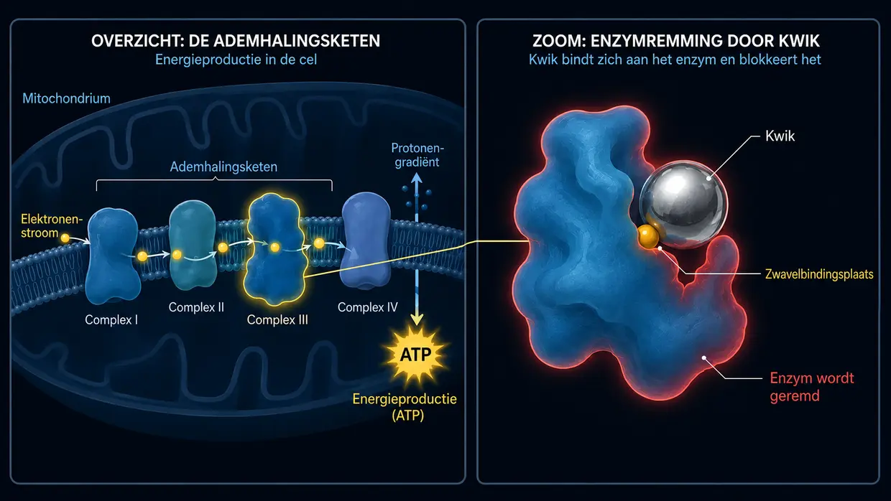

Tinnitus door medicijnen en giftige stoffen (ototoxiciteit)
Laatst bijgewerkt: augustus 2026
Ook ik had toen zelf extreme, helse tinnitus. Mijn beide eigen tinnitusperiodes werden volledig door lawaai veroorzaakt; zelf had ik geen tinnitus door medicijnen of giftige stoffen. Het constante geluid was desondanks een permanente aanval op mijn zenuwen, mijn slaap en mijn hele leven. Deze pagina beschrijft daarom mijn onderzoeks- en samenhangsmodel met verwijzingen naar praktijkervaringen; het is geen eigen genezingsverhaal over tinnitus door giftige stoffen.
Ik schrijf dit artikel over chemische oorzaken omdat dit onderwerp sinds 2012 een belangrijke rol speelt in mijn eigen onderzoek, waaronder toxicologie en milieugeneeskunde. Artsen die zich met milieugeneeskunde bezighouden, zoals dr. Klinghardt en dr. Mutter, melden vanuit hun praktijk dat oorsuizen bij sommige patiënten kan verminderen wanneer een werkelijk relevante belasting met giftige stoffen of zware metalen gericht wordt behandeld. Ik schrijf deze observatie nadrukkelijk toe aan hun praktijkervaring; het gaat niet om een algemeen bewezen werking of garantie. Wat ik deel, is mijn huidige inzicht en vormt de basis voor de oplossingsrichtingen die later op deze website worden uitgelegd.
De chemische aanval van binnenuit
Als we aan tinnitus denken, hebben we meestal direct twee beelden in ons hoofd: het dreunende concert (lawaai) of chronische stress door een onopgelost conflict of trauma, met een centraal conflictgebied. Gewone alledaagse stress en HPA-/cortisolstress zijn in mijn model geen rechtstreekse centrale bron van een toon. Daarnaast bestaan er chemische oorzaken: tinnitus door medicijnen of giftige stoffen. Naar mijn idee is deze vorm vrij zeldzaam, maar voor de volledigheid wil ik ook hier mijn kijk geven. In vaktaal heet dit ototoxiciteit (vrij vertaald: “giftigheid voor het oor”).
Het klinkt in eerste instantie misschien abstract, maar het binnenoor kan gevoelig zijn voor bepaalde chemische stoffen. Afhankelijk van de stof, chemische vorm en dosis kunnen medicijnen of giftige stoffen uit het milieu via de bloedbaan het binnenoor bereiken en daar haarcellen, de stria vascularis of neurale structuren op verschillende manieren aantasten.
Hoe chemische invloeden foutsignalen kunnen bevorderen
Denk nog even terug aan het ionenkanaal aan de punt van de haartjes, dat na overbelasting blijvend te wijd open blijft staan en niet meer goed sluit – zoals ik al heb uitgelegd op mijn pagina over tinnitus door lawaai. Bij een lawaaitrauma verandert de mechanische kracht van de geluidsgolven de geometrische stand van de fijne trilhaartjes.
Bij tinnitus door medicijnen of giftige stoffen kan het eindresultaat eveneens een actief foutsignaal zijn, maar de weg ernaartoe verschilt per stof. Je kunt elke haarcel in het oor zien als een kleine biologische batterij. Ze houdt een uiterst nauwkeurig evenwicht tussen energie (ATP), mineralen en elektrische spanning in stand.
Afhankelijk van de stof kunnen verschillende routes een rol spelen: veranderingen aan pompen, mitochondriën, prestin, membranen, actine, de stria vascularis of neurale structuren. Die mechanismen mogen niet worden samengevoegd tot één algemene aanval die voor alle medicijnen en giftige stoffen hetzelfde verloopt.
Een mogelijke keten in mijn model begint bij aangetaste mitochondriën. Daalt het ATP-niveau, dan kunnen energieafhankelijke pompen het ionenevenwicht minder goed stabiel houden. Een calciumoverschot in nog prikkelbaar weefsel zou dan een actief foutsignaal kunnen bevorderen dat door de hersenen als geluid wordt verwerkt. Dit is een mogelijke biochemische verbinding, geen voor iedere stof en iedere persoon bewezen vaste keten.
De waargenomen toonhoogte kan samenhangen met de tonotopische ligging van aangetaste structuren in het slakkenhuis of in de gehoorbanen. Afhankelijk van de stof en dosis kan de functie slechts tijdelijk verstoord raken of kan weefsel ook structureel worden beschadigd; daaruit volgt geen uniform verloop.
Een mogelijke extra neurale route (gehoorzenuw & myeline)
Bepaalde toxische invloeden kunnen volgens mijn onderzoeksmodel ook de gehoorzenuw of zijn myelinelaag beschadigen. Myelineschade kan de geleiding en de timing van neurale signalen verstoren. Een nog prikkelbare zenuw zou daardoor foutief kunnen vuren of elektrische overspraak tussen vezels kunnen ontwikkelen. Dit is een mogelijke aanvullende route; ze staat niet vast voor elke giftige stof en zegt niets over mijn eigen lawaaigerelateerde periodes.
De gehoorzenuw is geen enkele draad, maar een tonotopisch geordende bundel van vele zenuwvezels. Als gedemyeliniseerde, nog prikkelbare vezels werkelijk neurale overspraak ontwikkelen, zou de aangetaste plek kunnen bijdragen aan de waargenomen toonhoogte. Dit is binnen mijn model aannemelijk, maar geen rechtstreeks aangetoonde wetmatigheid bij tinnitus door giftige stoffen.
Gemeenschappelijk eindpunt, verschillende signaalbronnen
Als je al die stukjes van de puzzel bij elkaar legt, blijft in mijn model één gemeenschappelijk eindpunt over: overmatige elektrische activiteit in structuren die geluid verwerken. De actieve signaalbronnen zijn echter niet onderling uitwisselbaar:
- Een actief cochleair foutsignaal kan afkomstig zijn uit nog levend maar ontregeld weefsel van het binnenoor.
- Een nog prikkelbare gehoorzenuw zou foutief kunnen vuren of neurale overspraak kunnen ontwikkelen.
- Bij de stressroute houdt een onopgelost conflict volgens mijn model een centraal conflictgebied en het bijbehorende beschermingsprogramma chronisch actief; daardoor worden ook banen geactiveerd die geluid verwerken.
De routes verschillen. Wat ze binnen mijn model gemeen hebben, is een actief foutsignaal dat door de hersenen als toon wordt verwerkt of versterkt.
Centrale versterking (central gain) kan zo’n bestaand foutsignaal versterken, maar kan volgens mijn model zonder een aanwezig signaal zelf geen toon genereren. Als signaalbron en versterking duidelijk van elkaar worden onderscheiden, verliest tinnitus veel van zijn mysterieuze werking en worden de mogelijke aangrijpingspunten helderder.
Typische oorzaken (ototoxische stoffen)
Maar goed, verder in de tekst: er is een hele reeks stoffen die bekendstaan om hun mogelijk ototoxische werking. (Belangrijk: dit is geen medische lijst om zelf een diagnose te stellen, maar alleen bedoeld voor het algemene begrip!)
1. Medicijnen
Sommige middelen kunnen het binnenoor overprikkelen. Maar het is niet genoeg om alleen hun namen te kennen – je moet begrijpen waaróm ze het systeem laten ontsporen. Alleen als we het mechanisme van de schade begrijpen, heeft onze latere aanpak (celenergie en ontgifting) zin. Tot de bekendste groepen horen:
Hooggedoseerde pijnstillers (met name aspirine / acetylsalicylzuur)
Eerst de juiste context: één gewone hoofdpijntablet leidt niet automatisch tot tinnitus. Hoge blootstelling aan salicylaten kan afhankelijk van dosis of plasmaspiegel meestal omkeerbare gehoorveranderingen en oorsuizen veroorzaken, maar daaruit volgt geen harde drempel die voor iedereen hetzelfde is. Experimenteel onderzoek wijst op meerdere mechanismen die tegelijk een rol kunnen spelen:
- Buitenste haarcellen en prestin: salicylaat verandert experimenteel de prestinafhankelijke functie van buitenste haarcellen en daarmee de cochleaire versterker.
- Cochleaire en neurale signaalverwerking: diermodellen wijzen onder meer op betrokkenheid van cochleaire NMDA-receptoren en veranderde centrale activiteit. Hoe sterk ieder mechanisme bij mensen aan tinnitus bijdraagt, is nog niet definitief opgehelderd.
- Geen zelfstandige volumeknop: centrale versterking (central gain) kan een al bestaand cochleair of neuraal foutsignaal versterken. Binnen mijn model is het niet de vonk en kan het zonder een actief foutsignaal geen toon genereren. Een vaste menselijke keten ‘ATP-daling → pompuitval → calciumophoping → onafgebroken glutamaatafgifte’ is voor salicylaat niet aangetoond.
Dat helpt verklaren waarom salicylaatgerelateerde gehoorveranderingen vaak kunnen verdwijnen nadat er in overleg met een arts met het middel is gestopt en de concentratie van de werkzame stof daalt, zonder dat dit voor het individu een garantie is. Bij een lawaaitrauma kan de mechanisch-energetische overbelasting daarentegen actine en dwarsverbindingen (crosslinkers) beschadigen, de geometrie van de stereocilia veranderen en MET-kanalen daardoor blijvend te ver open houden. Sommige haartjes komen dan sterker schuin te staan dan andere; bij gelijkblijvende energievoorziening kan meer calcium instromen dan fysiologisch bedoeld. Meer hierover staat op mijn pagina over tinnitus door lawaai.
Bepaalde antibiotica (aminoglycosiden)
Aminoglycosiden zoals gentamicine zijn belangrijke antibiotica, maar kunnen de haarcellen van het binnenoor beschadigen. Experimenteel onderzoek toont opname in haarcellen, belasting van mitochondriën, reactieve zuurstofsoorten (ROS) en apoptotische celschade. Het risico en het verloop hangen onder meer af van de werkzame stof, dosis, duur, nierfunctie en individuele gevoeligheid. Binnen mijn model moeten twee gevolgen worden onderscheiden:
- Celverlies en gehoorverlies: als haarcellen afsterven, kan daar blijvend gehoorverlies uit voortkomen. Uit de omvang van het celverlies alleen valt echter niet betrouwbaar te voorspellen of daarnaast tinnitus ontstaat.
- Nog levend, ontregeld weefsel: als weefsel beschadigd maar prikkelbaar blijft, zou het binnen mijn model een actief cochleair foutsignaal kunnen leveren. Of de calcium- en glutamaatregulatie daarbij in een individueel geval de beslissende vonk vormen, is niet rechtstreeks aangetoond.
Diuretica (sterk werkende plaspillen)
Lisdiuretica kunnen de stria vascularis aantasten en de endocochleaire potentiaal tijdelijk sterk verlagen; dierbevindingen tonen daarbij ook morfologische veranderingen van de stria. Daardoor kan de cochleaire signaalverwerking worden verstoord en kunnen gehoorveranderingen of oorsuizen optreden. De oude formulering van een eenvoudig ‘lege batterij’ die zich noodzakelijk als tinnitus ontlaadt, was hiervoor te mechanistisch.
Chemotherapeutica (zoals cisplatine)
De ototoxiciteit van cisplatine is dosisafhankelijk en multifactorieel. Dierstudies tonen verminderd cochleair glutathion, oxidatieve stress en schade aan haarcellen, de stria vascularis en het spiraalganglion; ook veranderingen aan myelinescheden zijn waargenomen. Dat is iets anders dan de oude bewering dat cisplatine glutathion volledig uitput en meetbare kortsluitingen veroorzaakt die tinnitus opwekken. Welke veranderingen bij één persoon de tinnitus uitlokken, wordt niet verklaard door één uniforme calcium-/glutamaat- of kortsluitingsketen. Binnen mijn model zouden nog prikkelbaar beschadigd binnenoorweefsel of een foutief vurende neurale route als actieve signaalbron in aanmerking komen.
Kinine (malariamiddel & middelen tegen spierkramp)
Kinine kan dosisafhankelijk tijdelijk gehoorverlies en tinnitus veroorzaken. Een onderzoek bij gezonde proefpersonen en malariapatiënten vond grotendeels omkeerbare audiometrische veranderingen. De oude verklaring dat kinine eenvoudig de enige slagader van het binnenoor vernauwt en haarcellen daardoor direct in een ‘tinnituspaniekstand’ zet, is niet als enige keten aangetoond.
2. Zware metalen & giftige stoffen uit het milieu
De effecten van kwik, lood, cadmium en andere metalen verschillen afhankelijk van hun chemische vorm en dosis en van het betrokken doelweefsel. Experimenteel onderzoek wijst op meerdere mogelijke routes, waaronder verstoring van sporenelement- en antioxidantsystemen, binding aan thiolgroepen, mitochondriale remming, oxidatieve stress en neurale veranderingen. Niet ieder mechanisme geldt voor ieder metaal, en geen van deze afzonderlijke ketens is bij mensen bewezen als één uniforme route tot tinnitus. De volgende vier punten tonen daarom mogelijke verbanden binnen mijn onderzoeksmodel:
- 01Trojaans paard
- 02Thiol-hack
- 03Mitochondriën & oxidatieve stress
- 04Myeline-/zenuwschade
Mechanisme 1: het Trojaanse paard (het verdringen van sporenelementen)
Bepaalde metalen kunnen eiwitten en enzymsystemen verstoren die afhankelijk zijn van sporenelementen zoals zink of selenium, en daardoor antioxidatieve beschermingssystemen aantasten. Of zo’n verstoring in een individueel geval juist in het gehoorsysteem tot een actief tinnitusfoutsignaal leidt, is niet rechtstreeks bewezen. Ik beschrijf dit daarom als een mogelijke route naar kwetsbaarheid en versterking, niet als mijn eigen ervaring met tinnitus door giftige stoffen.
Mechanisme 2: de thiol-hack (het verbuigen van de eiwitten)

Metalen zoals kwik kunnen zich binden aan zwavelhoudende thiolgroepen (-SH) van eiwitten en daardoor enzymfuncties veranderen. De afbeelding maakt dit algemene biochemische principe zichtbaar. Ze bewijst niet dat bij een mens een bepaalde calciumpomp van een haarcel precies via deze route is geblokkeerd of dat daardoor tinnitus is ontstaan.
Mechanisme 3: mitochondriën & oxidatieve stress
Experimenteel onderzoek toont voor methylkwik remming van mitochondriale functies en oxidatieve stress in zenuwweefsel; voor lood en cadmium worden afhankelijk van het model eveneens mitochondriale, membraan- en antioxidantschade beschreven. Daaruit kan een mogelijke energetische of neurale betrokkenheid worden afgeleid. Het bewijst echter niet rechtstreeks dat in menselijke haarcellen altijd dezelfde keten tot blijvend open MET-kanalen en tinnitus verloopt.
Mechanisme 4: mogelijke schade aan myeline en zenuwen
Voor afzonderlijke stoffen bestaan dierbevindingen over veranderingen aan myeline of Schwanncellen; die mogen niet worden gegeneraliseerd naar alle metalen of elke gehoorzenuw. Myelineschade kan de nauwkeurige timing van de prikkelgeleiding verstoren. Of gedemyeliniseerde gehoorzenuwvezels daarnaast ephaptische overspraak veroorzaken en zo tinnitus of een bepaalde toonhoogte opwekken, blijft een mogelijke extra neurale route binnen mijn model, geen rechtstreeks aangetoond mechanisme.
-
01Chemische blootstelling
Bij voldoende hoge blootstelling kan een chemische stof via de bloedbaan het binnenoor of neurale structuren bereiken.
-
02Stofafhankelijke schade
Afhankelijk van de stof kunnen verstoring van de ATP-productie en pompfunctie, oxidatieve schade aan membranen en actine, en veranderingen aan prestin of myeline een rol spelen.
-
03Mogelijk actief foutsignaal
Als een actief cochleair foutsignaal of een foutief vurende neurale route ontstaat, kan het brein dit als toon verwerken en eventueel versterken.
Maar waarom heeft dan niet iedereen tinnitus? (De loterij van de zware metalen & de perfecte storm)
Op dit punt dringt zich een logische vraag op: waarom ontwikkelt niet iedere blootgestelde persoon tinnitus? Bepalend zijn onder meer de stof en chemische vorm, dosis, duur en blootstellingsroute, maar ook individuele gevoeligheid en andere belastingen. Een toxische voorbelasting, chronische stress, slaaptekort, tekorten aan voedingsstoffen en lawaai kunnen samen een ‘perfecte storm’ vormen. Die combinatie is echter geen voorwaarde: een voldoende sterke ototoxische invloed kan ook op zichzelf genoeg zijn.
1. De toxicologische loterij (de plaatselijke zwakke plek):
Metalen hebben geen ingebouwde ‘gps’ voor het oor. Hun verdeling hangt af van chemische vorm, binding, barrières, doorbloeding, dosis en uitscheiding. De eerdere bewering dat tandenknarsen of een stille ontsteking in nek en kaak de bloed-labyrintbarrière wijd openzet en kwik gericht naar de gehoorzenuw leidt, is geen aangetoond mechanisme en wordt hier niet gehandhaafd.
2. De vuilstort van je lichaam, het glutathionschild & het startdepot:
Glutathion en andere bindings- en uitscheidingssystemen behoren tot de lichaamseigen bescherming tegen oxidatieve en chemische belasting. Tegelijk verschillen mensen sterk in de aard en omvang van hun blootstelling, bijvoorbeeld via werk, roken, lucht, voeding of andere bronnen, en in opname, verdeling en uitscheiding. Sommige metalen kunnen zich afhankelijk van hun chemische vorm in bepaalde weefsels ophopen. Daaruit volgt niet automatisch dat ze bij voorkeur in de myeline van de gehoorzenuw worden ‘geparkeerd’ of daar tinnitus veroorzaken.
Sommige metalen kunnen de placenta passeren, zodat blootstelling al vóór de geboorte mogelijk is. Dit bewijst echter noch een bepaald ‘startdepot’ in het gehoorsysteem, noch latere tinnitus; daarvoor moeten blootstelling, dosis, weefsel en klinisch verloop afzonderlijk worden beoordeeld.
Genetische verschillen, voeding, orgaanfunctie, andere medicijnen en verdere belastingen kunnen beïnvloeden hoe een stof wordt opgenomen, verwerkt en uitgescheiden. De oude voorstelling van plotseling ‘opengaande vuilstorten’, waaruit giftige stoffen onvermijdelijk naar een lichamelijke zwakke plek trekken, is daarvoor te algemeen.
3. De fatale samenloop (de perfecte storm):
In de biologische werkelijkheid zien we hier echter vaak een uiterst complexe combinatie – en dat ruimt ook het misverstand uit de weg dat iedereen die na een lawaaivoorval tinnitus krijgt, automatisch volledig vergiftigd zou zijn met zware metalen. Dat is niet zo.
Als verbindingsmodel is denkbaar dat een relevante toxische voorbelasting de reserves van binnenoor- of zenuwweefsel vermindert zonder op zichzelf al een hoorbare toon te veroorzaken. Of daarbij mitochondriën, pompen, membranen, haarcellen of neurale structuren betrokken zijn, hangt af van de stof en mag niet zonder individuele bevinding worden vastgelegd.
Chronische stress kan via activering van het sympathische zenuwstelsel de doorbloeding van het binnenoor verminderen, de slaap verslechteren en de energie- en regeneratiereserves verlagen. Daardoor kan het oor kwetsbaarder worden voor lawaai en andere invloeden. Deze HPA-/cortisolroute is hier niet zelf de bron van de toon. Als in zo’n kwetsbare situatie een relevante lawaaibelasting op al aangetast weefsel terechtkomt, kunnen de factoren elkaar volgens mijn model versterken.
Dat is de ‘perfecte storm’ binnen mijn model: een toxische invloed kan weefsel verzwakken, stress de kwetsbaarheid vergroten en lawaai uiteindelijk een actief cochleair foutsignaal uitlokken. Welke rol iedere factor werkelijk speelt, moet per geval openblijven.
Aan het andere eind van het spectrum kan een voldoende sterke ototoxische invloed, bijvoorbeeld door bepaalde chemotherapeutica of een acute vergiftiging, ook zonder ‘perfecte storm’ en zonder extra lawaaibelasting haarcellen, de stria vascularis of neurale structuren beschadigen en tinnitus uitlokken.
Waarom tinnitus door giftige stoffen (zware metalen & bestrijdingsmiddelen) vaak zo hardnekkig is
Wie lawaai vermijdt, beëindigt de actuele blootstelling aan lawaai. Bij giftige stoffen uit het milieu, bestrijdingsmiddelen of zware metalen kan de situatie ingewikkelder zijn als een relevante belasting werkelijk aan het tinnitusproces bijdraagt. Verdeling, opslag en uitscheidingsduur verschillen echter sterk per stof en chemische vorm. Daarom mag noch een snel herstel, noch een jarenlange opslag algemeen worden beweerd.
Wat te doen?
En wat kun je nu doen? De wetenschappelijke en praktische onderbouwing van de mechanismen die ik hier heb beschreven, vind je op mijn bronnenpagina. Mijn eigen tinnituservaring en de stappen die mij hielpen, betreffen tinnitus door lawaai. De uitleg over medicijnen en giftige stoffen op deze pagina berust op mijn onderzoek en praktijkwaarnemingen van anderen, niet op mijn eigen genezingsverhaal over toxinen.
Belangrijke opmerking
Stop nooit op eigen initiatief met een medicijn op recept! Hoor je fluittonen of geruis in je oor in verband met het gebruik van een medicijn – en zeker als het plotseling is opgekomen – ga dan op korte termijn naar een arts om te overleggen wat de volgende stap is. Elke verandering in je medicatie hoort onder begeleiding van een arts.
De inhoud, verklaringsmodellen en strategieën die ik op deze website deel, zijn geen medisch advies, maar mijn persoonlijke ervaring en mijn eigen speurwerk. Elk lichaam is anders. Ik ben geen arts en beloof geen genezing. Heb je gezondheidsklachten, ga dan naar een gekwalificeerde arts. Wie de hier beschreven aanpak in praktijk brengt, doet dat op eigen verantwoordelijkheid.